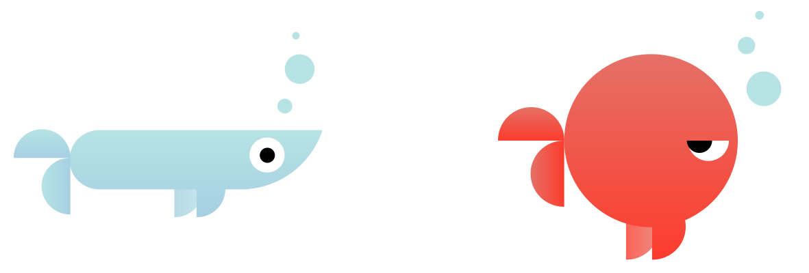
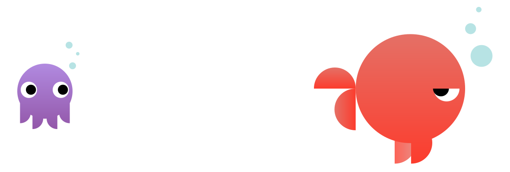
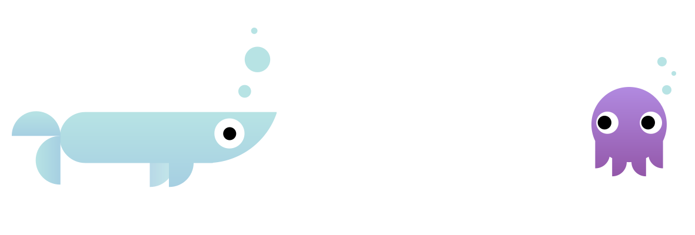
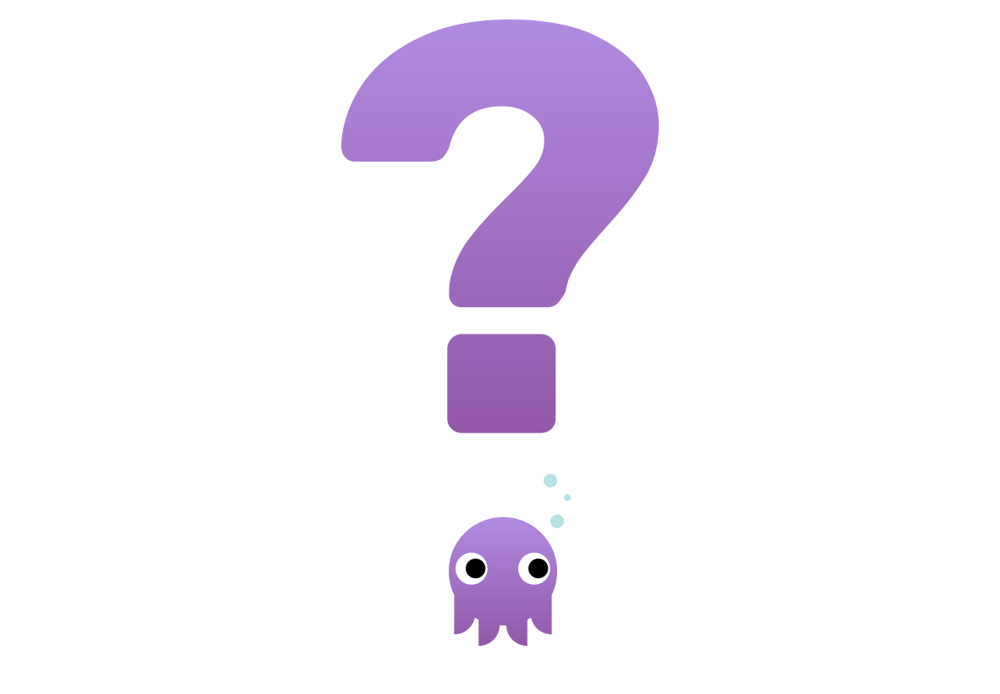

One Fish,
Two Fish,
Red Fish,
Bool Fish.
How one float fish found its way home from the Boolean Sea.

One day, in the bright blue sea.
A sleepy jellyfish named Koda floated away from home and woke up in the Boolean Sea.
Koda was lost and did not know how to float home.
In the Boolean Sea, there are two kinds of fish. The Yes Fish live on the blue side, and the No Fish live on the red side.

The jellyfish floated down to the red side, where she met a No Fish named False.

“I want to float home,” Koda asked, “Can you please help me find Number Ocean?”
Koda didn’t want to give up. “Have you seen any other jellyfish?”
“Do you know anyone who can tell me how to float home?”
Koda said thank you and floated over to the blue side, where she met a Yes Fish named True.

“Hello! Do you know how to float to the Number Ocean?”

“Great! Which way do I float?”
